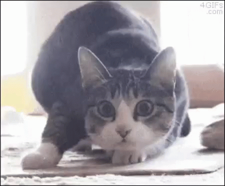

Eu gosto de gatos. E gosto muito de memes de gatos. E de memes, mesmo não sendo sobre gatos. Podem ser de doguinhos também.
Eu posso gostar muito de gatos, mas não sou a louca dos gatos.
Tenho dois gatos, mas eles estão no RJ. Como eles não podem morar aqui comigo, eles ficam na lá na minha casa, com a minha mãe.
Sempre vejo vídeos e fotos de gatinhos na internet.
A internet é um ótimo lugar para buscar novos memes e, principalmente, memes de gatinhos.
Um ótimo lugar pra começar a procurar memes é no Google.
Um bom exemplo de um meme de gatinho é esse:
